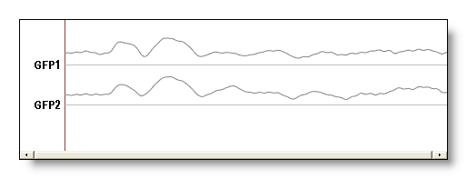
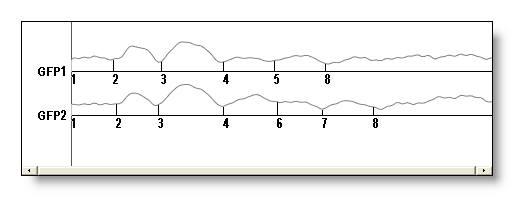
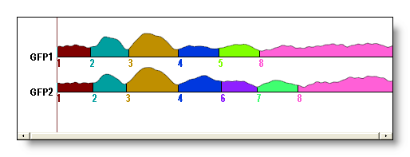
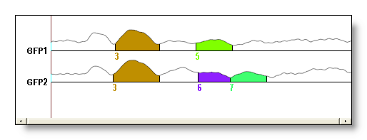
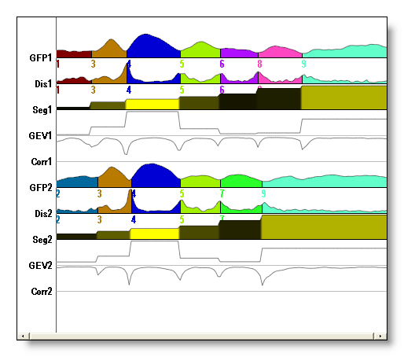
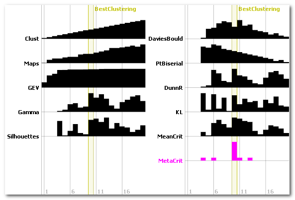
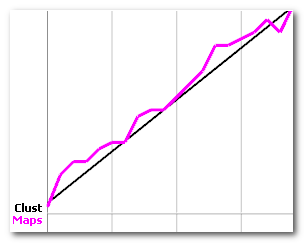

After the Segmentation Process, we have these files:
This display applies to the .seg (Segments) files. It is exactly the same as the EEG display, with just a few more options.
Quite the same as the EEG Menus, with the following variations or additions:
You can change the coloring scheme to these modes:
No: No filling, just plain tracks.

Empty: The colors are replaced by an empty color (usually white), and the segments are separated by black lines (useful if you want to apply your own colors, or give it to your little nephew so you have 5 minutes of silence).

Colored: The default colored display. Note that the colors picked depend on the number of segments, so the color for segment 3 will differ if it belongs to different segmentations.

You can restrict which segments will be actually colored, to focus the display on the segments of interest. Just give the list of segments you want to see, or empty to reset.

Select Segments from cursor position
This will automatically select the only segments that overlap the current cursor position.
Actually, the .seg file contains more informations than just the colored segments. When the file opens in Cartool, they are not shown to make the display clearer. To see all these informations, simply click on More Tracks button, from the EEG display.
These informations can also be retrieved for some processings of your own...
For each of the file that has been segmented, you have the following informations (in this order):
The GFP of the file
See an example, for two conditions, of the restricted initial display, and the full display. Note that the original file names are lost ("Condition1", "Control" f.ex.), so you have to remember the order in which you inputed the data to the segmentation process. GFP1, Dis1, Seg1, GEV1 and Corr1 are for the first condition / file, GFP2, Dis2 etc for the second condition / file, and so on:

The coloring schemes used are the following:
For the GFP and Dis tracks, a discrete color is assigned according to the value of the labeling (contained in the Seg track). The colors are choosen to be the "furthest" from each others. They also depend on the maximum number of clusters, so that the color of segment 3 (f.ex.) in two different segmentations will look different.
For the Seg track, a proportional coloring based on the GEV (the following track, by the way) is used. The higher the GEV, the brighter the segment (from black to yellow).
The .error.data file generated at the end of the Segmentation shows different error measures across the specified range of clusters. Its purpose is to help decide which is the optimal number of clusters, based on these measures.
It contains the following tracks, with the horizontal axis ranging from 1 to the max number of clusters:
Clust: the number of clusters from the mathematical
clustering process

The display is also based on the EEG display, with just a few more options:
Quite the same as the EEG Menus, with the following variations or additions:
Open Segmentation(s) at cursor position
A shortcut to directly open the Segments files corresponding to where the cursor is located. If more than one position is selected, all the files are opened.
There is a semantic distinction done here between the number of clusters and the number of segments:
Below we can see the number of clusters (black line) vs. the number of segments (violet line), showing that the temporal post-processing did alter the number of clusters:

The Global Explained Variance (GEV) is a global measure of the quality of a given segmentation. It converges asymptotically toward 1 (perfect segmentation) as the number of clusters increases. Note that this value of 1 can only be reached if the number of clusters is equal to the number of time frames.
The other measures are explained here.